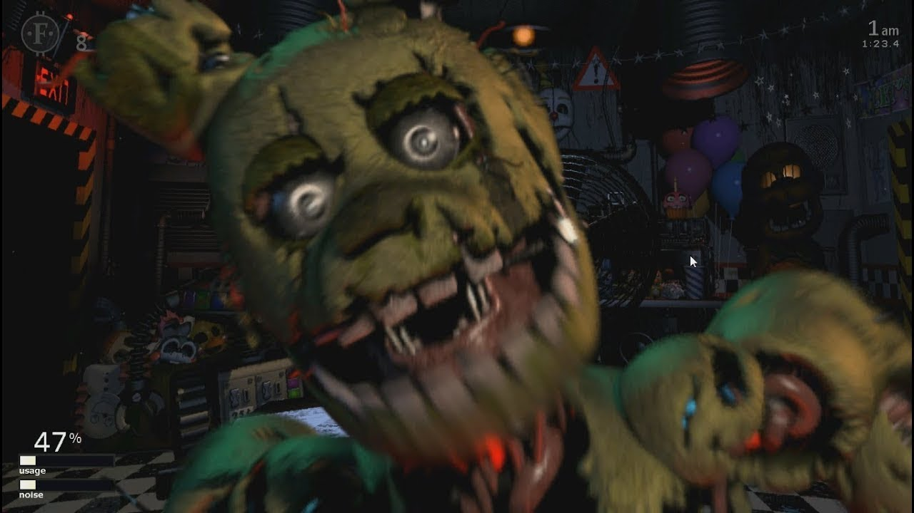

O tão esperado filme Five Nights at Freddy’s – O Pesadelo Sem Fim finalmente chegou e há muitas referências dos jogos para encontrar. O filme da Blumhouse Productions dá vida à série de jogos indie original de mesmo nome, com roteiro e produção de Scott Cawthon, o criador dos jogos.
O live-action foi anunciado em abril de 2015 e finalmente chega às telonas oito anos depois trazendo vida à franquia de terror neste novo formato. Existem diversos easter eggs dentro do filme que vão do óbvio ao mais obscuro, do início até o final de Five Nights at Freddy's, mas identificar todos eles de primeira pode ser difícil.
Confira abaixo nossa lista completa das 15 principais referências, incluindo spoilers do filme!
15 - O garoto do balão

Aparecendo em diversos momentos do filme, incluindo na cena pós-créditos, Balloon Boy é uma das referências mais marcantes e perceptíveis para os fãs de FNAF no longa-metragem. O personagem apareceu originalmente em Nights at Freddy’s 2 e pode render alguns sustos durante a versão para os cinemas.
14 - Os créditos de abertura são inspirados nos minijogos

Logo em seu começo, o longa-metragem de Five Nights at Freddy’s faz homenagem aos minigames da franquia, que eventualmente apareciam durante o gameplay principal e traziam detalhes da história. Feitos com gráficos retrôs, os jogos eram encerrados com sustos dos personagens e podiam trazer fatos importantes da história, incluindo a morte de diversas crianças pelos animatrônicos originais de FNAF.
13 - O turno que termina às 6h

Quem jogou sabe que nos primeiros quatro jogos da franquia somos introduzidos ao modo de sobrevivência noturno, sempre da meia-noite às seis da manhã, seja na Pizzaria Freddy Fazbear ou em outro lugar. Isso também foi transferido para o filme, onde o turno de Mike Schmidt (Josh Hutcherson) termina religiosamente às 6h.
12 - A teoria dos sonhos
O livro de teoria do sonho que Mike lê durante sua jornada no filme também é uma referência aos games. Durante o lançamento de Five Nights at Freddy’s 4, uma das teorias mais populares da comunicade indicava que toda a história era apenas um pesadelo na mente de uma criança.
A teoria foi popularizada por MatPat, o youtuber por trás do popular canal Game Theory. O influencer inclusive aparece no filme como um garçom e ainda solta seu popular bordão de encerramento dos vídeos: “But that’s just a theory” (“Mas isso é só uma teoria” em português).
11 - O Cara do Telefone

O filme de FNAF também faz referência ao "cara do telefone", a voz do tutorial nos jogos originais, sem nome, que explicava como os animatrônicos funcionavam. O personagem era simples, mas retorna no longa-metragem com um papel maior. O Phone Guy (ou o Cara do Telefone, em português literal) retorna na adaptação cinematográfica como um homem que recruta Mike para o trabalho, que mais tarde descobrimos ser o infame William Afton (Matthew Lillard). Ou seja, temos uma grande mudança em relação aos jogos, uma vez que o personagem é apenas um funcionário da Fazbear Entertainment nos games.
10 - O sobrenome de Mike
O longa-metragem demora para confirmar, mas, no final, descobrimos que o personagem que acompanhamos durante o filme é, na verdade, o mesmo do primeiro game. No primeiro jogo Five Nights at Freddy's, os jogadores descobrem que jogam como Mike Schmidt quando recebem um cheque no fim do turno.

No longa-metragens, o protagonista também se chama Mike Schimidt, mas sua trajetória pode acabar sendo diferente. Assim como o "Phone Guy", o personagem traz algumas mudanças em seu enredo quando comparado ao game, o que pode significar mudanças maiores em futuros filmes da franquia.
9 - A Mordida de 87
Para quem é fã de FNAF, existem momentos que já se tornaram icônicos na história da franquia, como A mordida de 83 e a Mordida de 87. Enquanto as cenas envolvendo o urso Freddy não estão no filme, temos uma grande referência durante o longa-metragem. O urso animatrônico não abocanha a cabeça de uma criança no filme. Porém, a babá Max acaba sendo atraída para os fundos de uma sala e acaba perdendo metade de seu corpo ao interagir com a boca de Freddy.
Apesar da ausência do momento original, a referência agradou a comunidade. Fãs uniram a cena do filme com a reação do youtuber Markiplier de 2020 e sua famosa frase "Was that a Bite of 87?!" ("Essa é a Mordida de 87?" em português):
8 - A corrida de Foxy no corredor é tão assustadora quanto nos jogos
A jogabilidade de cada um dos animatrônicos originais é uma das coisas mais memoráveis dos jogos. De todos, Foxy ganha disparado sendo o mais exclusivo em termos de gameplay. Para mantê-lo afastado, o jogador deve ficar de olho nele em Pirate’s Cove até que ele corra pelos corredores.
Ele correrá para o escritório e assustará o jogador ou baterá diretamente na porta fechada, drenando parte da energia. Essa corrida também aparece no filme e ainda é complementada com o grito de susto característico.
7 - A aparência de Golden Freddy lembra os jogos
Five Nights at Freddy’s – O Pesadelo Sem Fim também inclui uma referência a Golden Freddy. No jogo, apesar de ser incapaz de se mover devido à falta de um endoesqueleto como o resto dos animatrônicos, ele fazia a tecnologia enlouquecer e exibia a frase “sou eu” por toda a tela. E não para por aí, porque se o jogador morre para o Golden Freddy, ele terá o poder de desligar totalmente o jogo. Isso é visto no filme, quando Golden Freddy aparece pela primeira vez para Mike, as luzes começam a brilhar, as câmeras param de funcionar e a frase “sou eu” está escrita no espelho do escritório.
6 - Aparições de YouTubers famosos de Five Nights At Freddy’s
Além do já mencionado MatPat do Game Theory, o youtuber CoryxKenshin também aparece no filme como um motorista de táxi. Já Dawko, famoso por seus conteúdos sobre a franquia no YouTube, aparece na parede da Pizzaria apontado como funcionário do mês de julho. Outros youtubers também são apresentados como funcionários do mês incluindo Razzbowski, Baz, FusionZGamer e 8-Bit Ryan. Quem ficou de fora do longa foi Markiplier, que quase foi escalado como guarda, mas teve conflitos de agenda e não participou do filme.
5 - A cafeteria Sparky's
A tia de Mike se reúne a babá Max no Sparky's Coffee Shop. O local também é uma referência a uma farsa popularizada na época do jogo original em que, supostamente, um novo animatrônico chamado Sparky the Dog apareceria e tentaria matar o jogador durante uma das noites. Embora esse animatrônico nunca tenha existido no jogo, o legado dessa farsa continua vivo na comunidade e agora também no filme, mesmo quase uma década depois.
4 - Os animatrônicos ainda são fracos à eletricidade
Apesar da fraqueza pela eletricidade não ser mencionada nos jogos originais, o fato só veio à tona no quinto jogo da franquia, Five Nights at Freddy’s: Sister Location. Nele, o jogador segue uma estrutura de cinco noites, na qual completa tarefas como verificar os disjuntores e certificar-se de que os animatrônicos estão em seus palcos. No entanto, para garantir que os animatrônicos permaneçam onde deveriam estar, o jogador os aplica choques elétricos. Isso acontece no filme, quando Mike e Vanessa eletrocutam os animatrônicos para desativá-los temporariamente.
3 - Uma cena assustadora é extraída diretamente de Five Nights At Freddy’s 3

Assim com o longa-metragem, Five Nights at Freddy’s 3 ficou conhecido pela comunidade por ser o jogo com menos sustos, mas bastante história. Um pedaço da narrativa do game, inclusive, acabou virando uma cena importante do longa-metragem. Nela, William Afton veste seu traje de Springlock quando todos os animatrônicos se voltam contra ele. Devido as travas frequentemente defeituosas do traje, o mecanismo entra em colapso e esmaga seu corpo por dentro. Essa referência foi um prato cheio para os fãs, já que houve finalmente a chance de vê-lo em ação.
2 - O nome de Vanessa
Mike passa a receber visitas da policial Vanessa (Elizabeth Lail) durante o turno da noite, e a personagem sabe demais sobre o local, as crianças mortas e os animatrônicos. Apesar dela não ser uma personagem do jogo original, seu nome possui vínculo com um personagem importante de Five Nights at Freddy’s: Help Wanted e Five Nights at Freddy’s: Security Breach. Nestes jogos, Vanessa é a segurança noturna do complexo de entretenimento Pizzaplex, que precisa caçar o jogador que invadiu o local durante a noite, invertendo os papéis. A personagem também tem forte ligação com Vanny, a coelha assassina seguidora de William Afton que antagoniza FNAF 9. Além disso, William Afton possui uma filha, mas que se chama Elizabeth ou "A Garotinha", como também é chamada em Five Nights at Freddy’s: Sister Location.
1 - Novo filme chegando no futuro?